Kawasakicho
Kawasakicho · Miyagi
Kawasakicho
Highlighted on the Miyagi map.

Stay
Villa Aone
Villa Aone
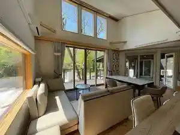
たびの邸宅 宮城川崎
Tabino Teitaku Miyagi Kawasaki
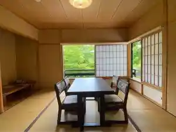
Dining
川音亭
Kawaoto Tei
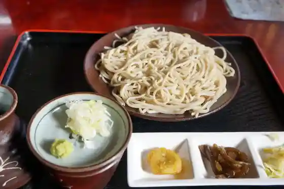
森のピザ工房 ルヴォワール 川崎町本店
Mori No Piza Koubou Ruvowaaru Kawasakichou Honten
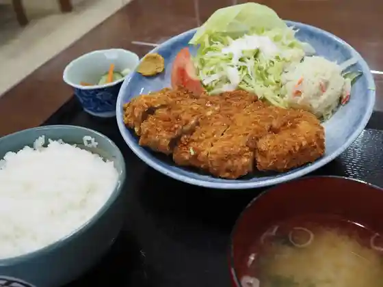
佐幸精肉食堂
Sa Sachi Seiniku Shokudo
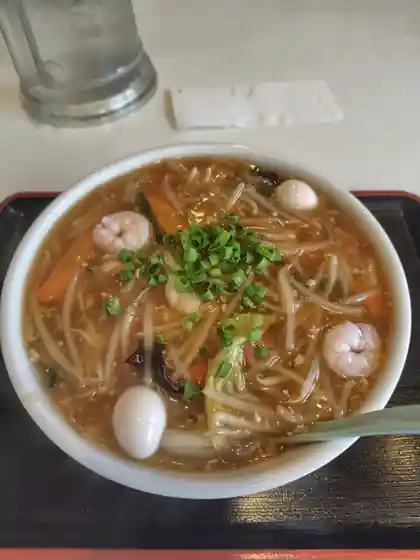
ドライブイン みしま
Doraibuin Mishima
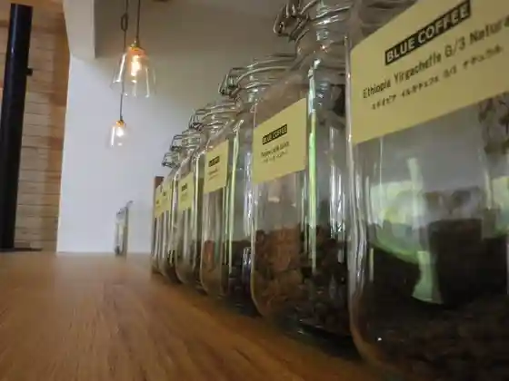
ブルー コーヒー
Buruu Koohii
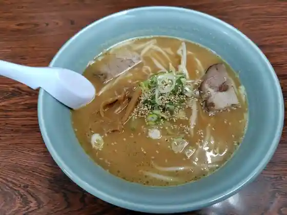
支那そば家
Shina Soba Ie
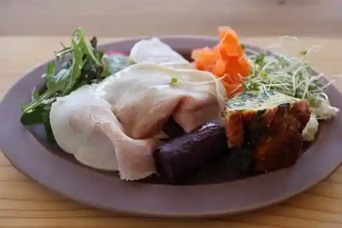
farmer's table mano
farmer&39s table mano
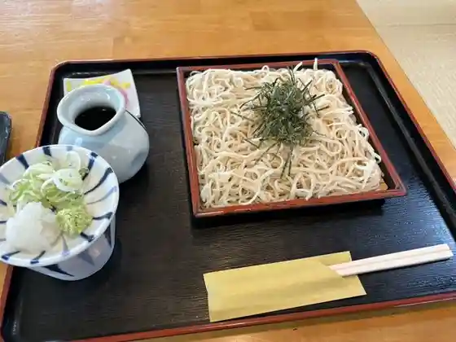
そば処 舌つづみ
Soba Tokoro Shita Tsuzumi
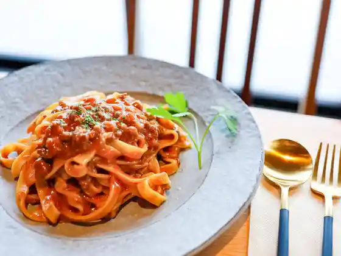
Ono de cafe
Ono de cafe
東蔵王ゴルフ倶楽部 レストラン
Touzou Ou Gorufu Kurabu Resutoran
湯元 不忘閣
Yumoto Fu Bou Kaku
山景の宿 流辿
Yama Kei No Yado Ryuu Ten
カフェ マル
Kafe Maru
お宿 はなぶさ
O Yado Hanabusa
峩々温泉
Ga (kurikaesi) Onsen
大勝食堂
Taishou Shokudo
手造りジェラートan
Te Tsukuri Jieraato An
岡崎旅館
Okazaki Ryokan
青根洋館
Aone Youkan
はるそば家
Harusoba Ie
Sora
Sora
生駒農場
Ikoma Noujou
ミッキーランド
Mikkiirando
スタジオファーレン 青根の家
Sutajiofaaren Aone No Ie
観山聴月
Kanzan Chou Gatsu
古関食堂 古関PA(上り)店
Koseki Shokudo Koseki Pa( Nobori ) Mise
イーレはせくら王国
Iire Hasekura Oukoku
かもしか茶屋
Kamoshika Chaya
クリヤ コーヒー ロースターズ
Kuriya Koohii Roosutaazu
宝来屋
Hourai Ya
駒草
Komakusa
シベール ハーツランド ファクトリーテラス
Shibeeru Haatsurando Fakutoriiterasu
彩のやかた
Sai Noyakata
茶舗 福ノ葉堂
Chaho Fuku No Ha Dou
ラップランド
Rappurando
杜の公園ゴルフクラブ レストラン
Mori No Kouen Gorufukurabu Resutoran
kawauchi Café
kawauchi Caf
小山支店
Oyama Shiten
ファットリア アル フィオーレ
Fattoria Aru Fioore
まさる
Masaru
みっけ学舎ホール
Mikke Gakusha Hooru
山長商店
Yamachou Shouten
そば茶屋 手打ち十割そば 一
Soba Chaya Teuchi Chi Juu Wari Soba Ichi
HAKKEI
HAKKEI
しずく茶
Shizuku Cha
デイリーヤマザキ 古関PA(上り)店
Deiriiyamazaki Koseki Pa( Nobori ) Mise
デイリー食堂 古関PA(下り)店
Deirii Shokudo Koseki Pa( Kudari ) Mise
キッズファームかわさき レストラン
Kizzufaamu Kawasaki Resutoran
レストラン&カフェ kokage
& kokage
憩いの森レストハウス
Ikoi No Mori Resutohausu
ぱぴハウス 川崎店
Papi Hausu Kawasakiten
デイリーヤマザキ 古関PA(下り)店
Deiriiyamazaki Koseki Pa( Kudari ) Mise
食事処味かつ
Shokuji Tokoro Aji Katsu
須賀物産
Suga Bussan
お菓子屋 とち
O Kashiya Tochi
じゃっぽの湯
Jappono Yu
うえの屋
Ueno Ya
LAWSON 川崎碁石店
LAWSON
Kerapirka
Kerapirka
焼肉 とらいち
Yakiniku Toraichi
ハセコレ
Hasekore
みやぎ蔵王セントメリースキー場 カフェテリア
Miyagi Zaou Sentomeriisukii Ba Kafeteria
青根温泉 一棟温泉宿 星月
Aone Onsen Hitomune Onsenyado Hoshizuki
木勘坊
Ki Kan Bou
Peanuts Place
Peanuts Place
佐々木精肉店
Sasaki Seinikuten
たべることくらすことSOW
Taberukotokurasukoto Sow
仙台・川崎ホルモン 味処 久兵衛
仙台・川崎ホルモン 味処 久兵衛
韓国チャラードキムチ
Kankoku Charaadokimuchi
中井食品
Nakai Shokuhin
玄米食店 花の浪亭
Genmaishoku Mise Hana No Nami Tei
蔵王 わん!わん!ランド
Zaou Wan ! Wan ! Rando
るぽぽかわさき
Rupopokawasaki
ひょうたん
Hyoutan
Chinese Sobaya
Chinese Sobaya
Kawado Tei
Kawado Tei
Soba Yamakata
Soba Yamakata
Ramen Tenguzan Sohonke
Ramen Tenguzan Sohonke
Sako Seiniku Shokudo
Sako Seiniku Shokudo
Keiryu
Keiryu
Sankei No Yado Ryusen
Sankei No Yado Ryusen
Drive In Mishima
Drive In Mishima
Katchan
Katchan
Furuseki Pa Kudari Sen Snack Corner
Furuseki Pa Kudari Sen Snack Corner
Horaiya
Horaiya
Lapland
Lapland
Taikatsu Shokudo
Taikatsu Shokudo
Soba Restaurant Shitatsuzumi
Soba Restaurant Shitatsuzumi
Fukuryu Furuseki Pa Kudari
Fukuryu Furuseki Pa Kudari
Studio Fahren Aone No Ie
Studio Fahren Aone No Ie
Sasaya Drive In
Sasaya Drive In
Karaoke Studio Denen
Karaoke Studio Denen
Furusekian
Furusekian
Forest Confectionery Workshop MoonDeer
Forest Confectionery Workshop MoonDeer
Irodori No Yakata
Irodori No Yakata
Izuru Zushi
Izuru Zushi
Shokuji Dokoroaji Katsu
Shokuji Dokoroaji Katsu
Hosen Shokudo
Hosen Shokudo
Tarafuku
Tarafuku
Ofukuro Bento Kawasaki
Ofukuro Bento Kawasaki
Zao Wan Wan Land Cafe
Zao Wan Wan Land Cafe
Oyama Main Store
Oyama Main Store
Hyotan
Hyotan
Onsen
Jappo no Yu Day Onsen
Jappo no Yu day onsen — Aone hot-spring day bath
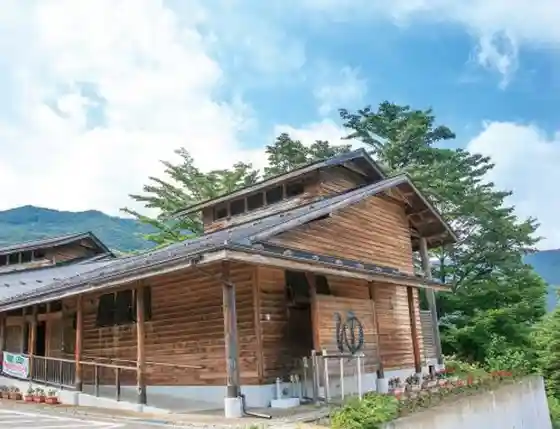
Shop
Fattoria AL FIORE
Fattoria AL FIORE winery and shop — Kawasaki wine and local products
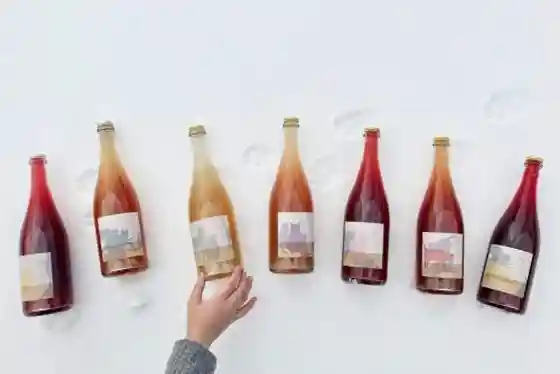
Sights
Soft Rime Snow Monsters
Shin-Tohoku Sasaya Stream Fishing
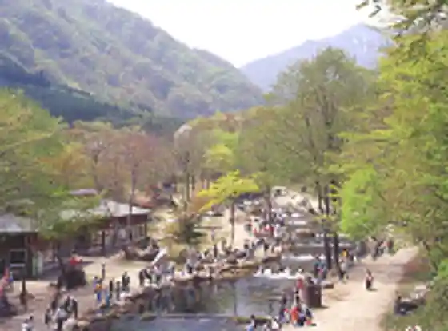
Enpukuji Temple
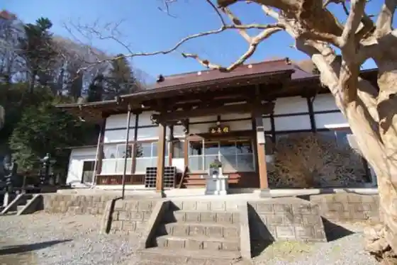
Lake Kamafusa